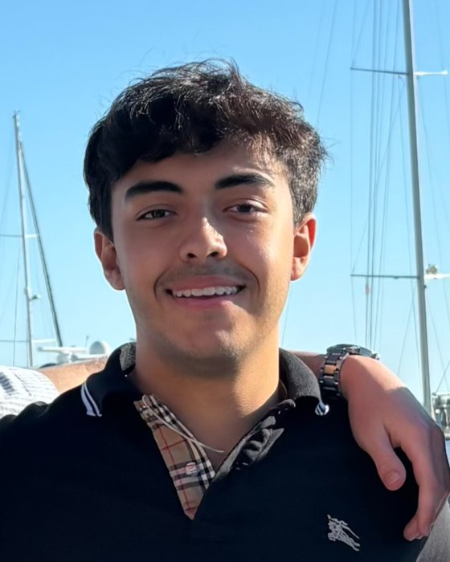
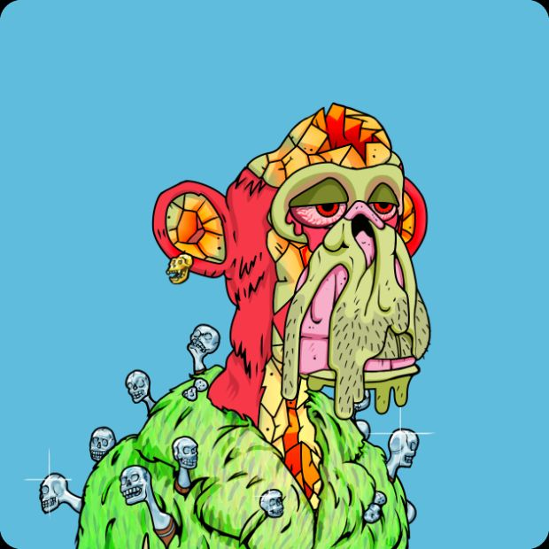

Christian Morey
Inspired by Wikipedia, the free encyclopedia
A personal portfolio in the shape of a reference article.
Contents

images/portrait.jpgAdd this file to the repo and the photo appears here.
| Occupation | Operations manager; analytics practitioner |
|---|---|
| Based in | Akron, Ohio (Summit County) |
| Employer | Amazon — Operations Manager, Amazon Robotics fulfillment center |
| Previously | RKL LLP — Analyst (2023–2024) |
| Team | 250–400 associates; 16 leaders |
| Education | DeSales University (B.S. Finance, 2024) Georgia Institute of Technology (M.S. Analytics, in progress) |
| Known for | Operations leadership at scale; cost-visibility dashboards; workflow automation |
| Languages | Python, SQL, R, VBA |
| Profiles | GitHub · LinkedIn |
| Site type | Personal portfolio |
| Written in | HTML, CSS & JS |
| Launched | August 2026 |
Christian Morey is an American operations manager and data analytics practitioner based in Northeast Ohio. He is an operations manager at an Amazon Robotics fulfillment center, where he directs a floor of 250 to 400 associates alongside four salaried and twelve hourly leaders on a given day, running continuous coverage on twelve-hour shifts.[3]
Morey works in the seam between operations and analytics: the reporting, automation, and decision-support tooling that keeps a floor running. Before Amazon he was an analyst at RKL LLP, where he automated accounting and finance workflows and reduced manual entry hours by 18 percent.[1] In both roles the recurring theme has been the same: replacing hand-assembled spreadsheets with structured, queryable systems, and putting cost metrics in front of decision-makers in real time rather than a week late.
Morey holds a Bachelor of Science in Finance from DeSales University, and in 2026 enrolled in the Georgia Institute of Technology's Online Master of Science in Analytics (OMSA), beginning with Intro to Computing for Data Analysis.
Background
Morey’s route into analytics ran through finance and operations rather than through a computer science program. It started with VBA: writing macros to take the repetitive parts out of accounting work, then reaching for Azure and his firm’s financial systems to pull data that had previously been re-keyed by hand, and finally building Smartsheet and Power BI dashboards on top of it so the numbers arrived without anyone assembling them.
That sequence — the manual process first, the automation second, the dashboard third — still shapes how he approaches technical work. He tends to arrive at a model only after the collection and the definitions around it are trustworthy, a habit formed by watching what happens on an operations floor when they are not.
[Optional: two or three sentences on where you grew up and what pointed you toward this work. This is the section that makes the page read like an article instead of a résumé — but it only works with real detail, so leave it out rather than filling it with something generic.]
Career

images/dashboard.pngA dashboard you built — blur anything proprietary first.
Amazon — Operations Manager
Morey manages operations at an Amazon Robotics fulfillment center in Northeast Ohio. On a given day he is responsible for 250 to 400 associates, four salaried leaders, and twelve hourly leaders, across a schedule of four twelve-hour shifts per week.
The role is a constraint problem before it is anything else. Labor has to be matched to forecast demand shift by shift; throughput and quality targets have to hold while a robotic floor moves the bottleneck from hour to hour; and when they do not hold, the escalation has to be fast and correctly aimed. Much of the judgment involved is about which number to look at first.
His analytics work at the site has centered on cost visibility — building dashboards that surface real-time cost metrics for the leaders making the calls, instead of leaving them in a report read the following week.
RKL LLP — Analyst
From December 2023 to May 2024, Morey worked as an analyst at RKL LLP, an accounting and advisory firm, on-site in Exton, Pennsylvania. The work was finance-side and automation-heavy:
- Workflow automation. Streamlined accounting and finance processes using Smartsheet, APIs, and system integrations, reducing manual entry hours by 18 percent and accelerating the month-end budget reporting cycle.
- Reporting and forecasting. Built financial reports, client budgets, and forecasting models in Sage Intacct, Bill.com, and Suralink, producing analysis that supported executive budgeting decisions.
- Cross-functional delivery. Partnered with multiple service lines and external clients to develop company-wide financial tracking, contributing to client retention and revenue stability.
Brick Lane
Alongside the roles above, Morey founded Brick Lane, a small AI workflow automation and business intelligence venture aimed at ecommerce and logistics companies, which he later sold. Its thesis was the failure mode he keeps meeting in practice: a company running an ERP, a warehouse system, a shipping platform, and a marketing stack that do not agree with one another, and a leadership team making decisions from a deck someone assembles by hand every week.
Analytics in operations
Much of Morey’s technical work has been internal and unglamorous by design: recurring reports that used to be assembled by hand, reconciliations between systems that were never meant to talk to each other, and the slow migration of institutional knowledge out of individual workbooks and into shared, queryable tables.
The clearest illustration is a Smartsheet build that consolidated scattered operational metrics into a single real-time KPI view. It replaced a reporting cycle that had run on manual assembly, cutting the time to pull a current picture of the numbers from a scheduled report to on demand.[4] [Add the real figure here — the percentage you cut pull time by, or hours returned per week. I am not going to put an invented number on your page.]
- Dashboards. Real-time cost and performance views built for people who are mid-shift, not mid-analysis — which constrains how much a dashboard is allowed to ask of its reader.
- Workflow automation. Smartsheet, APIs, and integrations at RKL; VBA and scripted reporting elsewhere. The most direct route to time savings in an environment where spreadsheets are already the lingua franca.
- SQL and Python. Queries, joins across incompatible exports, and the cleaning that precedes any of it.
- Definitions and documentation. Written metric definitions, so that two people asking the same question get the same number.
Education
University
Tech

images/graduation.jpgA graduation photo, or any photo of you.
Morey holds a Bachelor of Science in Finance from DeSales University in Center Valley, Pennsylvania, awarded in 2024. The finance grounding is why his analytics work has tended to start at the cost side of an operation rather than the modeling side.
In Fall 2026 he began the Online Master of Science in Analytics at the Georgia Institute of Technology, a two-year program pursued alongside full-time work. His first term centers on CSE 6040: Intro to Computing for Data Analysis, a Python-based course covering numerical computing, data structures for analysis, and applied algorithms, assessed through autograded notebooks and proctored exams.[2]
The program offers three tracks — Analytical Tools, Business Analytics, and Computational Data Analytics — and Morey expects to settle on one as the core coursework progresses. The longer-term goal is a move from operations leadership into a full-time analytics role.
Projects
Morey’s production work — the automations and dashboards described above — lives inside employer systems and cannot be published. A public portfolio is being built alongside the Georgia Tech program; the entries below are independent of any employer.
Genealogical Record LinkageOngoing
A personal research project tracing family lineage using the gateway ancestor strategy — identifying documented colonial-era immigrants with established descents into medieval nobility, then working to connect a line to one of them.
Practically, it is an entity resolution problem. Names are spelled inconsistently across generations, dates are approximate, records are transcribed by hand from originals, and independent sources routinely disagree about the same person. Deciding that two records describe one individual — and being able to say why — is the same judgment that record matching demands in commercial data, learned here on a dataset where being wrong is cheap.
[First public repository]
[The most valuable thing you can add to this page. One end-to-end analysis with a readable README: the question, where the data came from, what you did to it, what it showed, and what you would do differently. It does not need to be sophisticated — a small, finished, honest project beats an ambitious unfinished one, and it is what moves this page from “operations manager studying analytics” to “analyst.” Your CSE 6040 coursework is a natural source once the term is underway.]
Technical Skills
| Tool | Used for | Depth |
|---|---|---|
| Excel | Modeling, pivots, the shared language of the floor | Strong |
| VBA | Macro automation of accounting and reporting workflows | Strong |
| Smartsheet | Workflow automation and integrations at RKL | Strong |
| Power BI | Cost and performance dashboards for operational leadership | Working |
| SQL | Querying source systems, joins, reporting views | Working |
| Python | pandas and analysis; primary language of the OMSA program | Learning |
| Microsoft Azure | Data access and integration for financial systems | Familiar |
| R | Statistical analysis and visualization | Familiar |
| Sage Intacct, Bill.com, Suralink | Financial reporting, budgets, and forecasting models | Applied |
Domain strengths. Workforce scheduling and capacity planning at the 250–400 headcount scale, KPI definition and reporting, process automation, cross-functional escalation, and translating between floor operators and systems people — the last of which is the differentiator on a résumé full of candidates who have only ever seen clean data.
Certifications and Continuing Education
- M.S. Analytics, Georgia Institute of Technology — in progress, expected 2028
- [Any certification with a verifiable completion record — Microsoft PL-300 for Power BI would sit naturally next to the dashboard work, and Six Sigma Green Belt next to the operations role. Delete this line if you have none yet; an empty list is better than a padded one.]
Personal Life

images/travel.jpg
Morey lives in the Akron area of Summit County, Ohio.
Interests

images/ape.jpg
Morey collects Pokémon trading cards, approaching the hobby partly as a market: tracking population reports, print runs, and grading spreads is the kind of small, self-contained dataset that rewards the same habits as the day job. The same interest in thin, illiquid markets extends to digital collectibles — he holds a Bored Ape Yacht Club token.
He also cooks in batches, keeps a running interest in genealogy and archival research, and builds side projects mostly to have somewhere to try a tool before using it on anything that matters.
Further Reading and Resources
- Georgia Tech OMSA — program structure and course catalog
- Python for Data Analysis — McKinney, the pandas reference
- R for Data Science — Wickham & Grolemund
- Analytics engineering — the discipline that sits between the warehouse and the dashboard
External Links
Notes
- Figure self-reported from the RKL LLP analyst role (December 2023 – May 2024); see LinkedIn. ↑
- Georgia Institute of Technology, “CSE 6040: Intro to Computing for Data Analysis,” Fall 2026 course description. ↑
- Headcount and leadership scope are typical daily figures and vary by shift and season. ↑
- Self-reported. ↑
No affiliation with wikipedia.org or the Wikimedia Foundation. This page is a personal portfolio presented in an encyclopedic format; it is a self-authored document, not a third-party reference work.